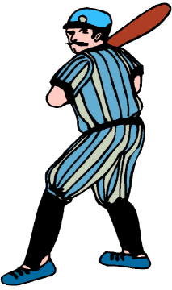

His real name was Frank Johnson, but everybody who followed baseball in the Tri-County Baseball League just called him "Fireball". He was definitely the best pitcher on his team, the Bensonville Beagles, and probably the best in the whole 10-team league. He earned that nickname, and the respect of every batter who had to face him, due to his blazing fast ball pitch. Legend has it that the ball was nearly invisible as he threw it to the plate.
One day the Hatcherton Hawkeyes came to play on Bensonville's home field. Fireball was going to pitch for the Beagles. The heckling got started early, led by Big Mark Stockdale, a pretty fair hitter of home runs on the Hawkeyes' team.
 "Hey, Fireball," goaded Mark, "you think you're a hot pitcher, I'd guess. You throw pretty hard to your catcher."
"Well, reckon I do, 'cause he complains of a sore hand after games I pitch." said Frank.
"So you're good throwin' to a batter. But just how good are you at throwin' upwards to the sky?" was Mark's challenge. "Straight up vertically, I mean. How long do ya' think ya' could keep the ball in the air?"
"Never really thought about that," replied Frank. "Maybe 4 or 5 seconds, I s'pose."
"I bet you a 20-dollar bill you can't keep it up in the air for more than 5 seconds. What do ya say about that, Fireball?"
"I say take out your money, Mark." Frank said.
Just then an umpire stepped up and said, "I'll hold the money, boys. And I've got a stop watch here to do the timing." Everyone agreed to that. The umpire tossed Frank a new baseball.
Frank walked confidently out to the middle of the infield, took off his cap, and tossed it about 6 feet away from where he was standing. "The ball will come down and land in my cap," he boasted.
Frank gave the ball a good rub to soften the leather a bit. He went into his windup routine, then turned sideways and with a mighty effort, sent that ball skyward. Up, up it went. Quickly it was no larger than a dot in a "dot-com" address. Then just as quickly, it returned to earth - landing right in Frank's cap! What a pitcher!
When the umpire announced the time, the Beagles fans went wild with happiness. Their Fireball had done another great performance! But as Frank reached out to receive the $40 from the umpire, he felt a strange pain in his pitching arm. "Gee, I hope I haven't hurt my arm throwing that way."
Your task is to tell me how long the ball was in the air if Frank released the ball from his hand 2 meters from ground level with an initial upward velocity of 30 meters per second. (Round your answer to the nearest 10th of a second.)
NOTE: Before writing out your answer, please check our Guide lines for Writing POW Answers.
And some technical help can be found in the Commentary for the problem at this site: Motorcycle Daredevil.
| Comments? Send e-mail. | Back to top | Go back to Home Page | Go back to Contents |